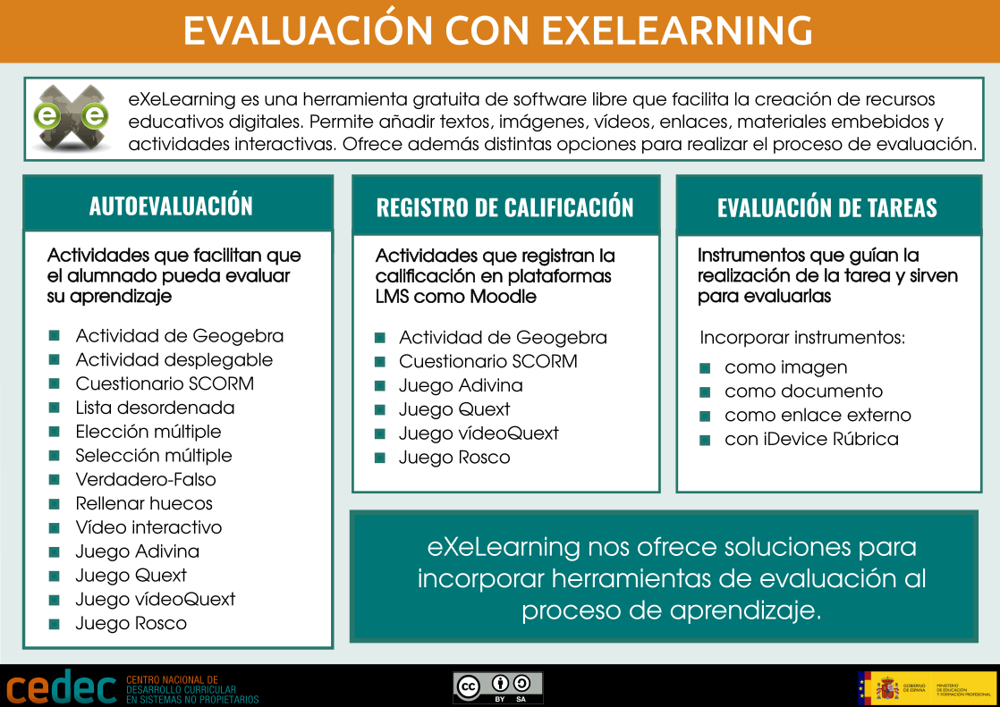

eXe para enseñanza a distancia
Crear secuencias didácticas para la enseñanza a distancia
Aunque en general podemos utilizar eXeLearning para crear cualquier tipo de secuencia didáctica, en este apartado nos vamos a centrar en las ventajas que ofrece la herramienta de cara a su uso en la educación a distancia. De hecho es una herramienta muy utilizada para crear contenidos para este tipo de enseñanza, como los materiales del Instituto de Enseñanzas a Distancia de Andalucía (IEDA) o los de la Formación Profesional del País Vasco (BirtLH).
A continuación mostramos algunas recomendaciones para diseñar una secuencia didáctica para formación a distancia.
Diseñamos una secuencia didáctica completa
Diseñamos nuestra secuencia didáctica tal como hemos visto a lo largo de este curso, creando la estructura del recurso e incorporando textos, imágenes, enlaces, vídeos, materiales embebidos… El recurso debe contener toda la información e instrucciones necesarias para que el alumnado lo consulte, adquiera conocimientos y sepa desarrollar las tareas propuestas. Se deben facilitar además todos los enlaces, propuestas de herramientas digitales, instrumentos de evaluación y demás materiales necesarios para cumplir con los objetivos de aprendizaje.
Incorporamos actividades de evaluación
Para facilitar el repaso de los conocimientos adquiridos, eXeLearning ofrece una amplia variedad de actividades interactivas, que servirán para que cada alumno compruebe si ha comprendido correctamente lo abordado hasta ese momento. Hay gran variedad de actividades como hemos visto. También podemos proponer la realización de tareas más complejas, facilitando siempre el instrumento de evaluación asociado.
Ponemos el recurso a disposición del alumnado
Una vez hemos terminado la secuencia didáctica podemos ponerla a disposición del alumnado de varias formas:
- Utilizarlo sin conexión. En el caso de alumnado sin conexión a Internet o con conexión de mala calidad, podemos exportar como sitio web o como epub y facilitarle el archivo en un pendrive o a través de correo electrónico para que lo guarde en su equipo. De esta forma podrá consultar los contenidos en local (en su equipo), a excepción de los enlaces y materiales embebidos que sí necesiten conexión a Internet. Por eso, si queremos que el alumnado trabaje sin conexión, es importante que todo lo que necesiten esté incorporado en el recurso en lugar de enlazado (documentos, vídeos, audios…). En el caso de exportar como sitio web, se creará una carpeta con todos los archivos; para visualizar el contenido simplemente hay que hacer doble clic en el archivo index.html, y se abrirá en el navegador que tenga por defecto el equipo.
- Publicarlo en Moodle. En el caso de usar un LMS como Moodle, podremos incorporar nuestro recurso en formato web o SCORM, para que el alumnado lo consulte y realice las tareas asignadas. Si además de las actividades de autoevaluación se desea plantear alguna calificable, podemos configurarlas para que, una vez subido el recurso como SCORM, se registren las notas que se vayan obteniendo en la realización de actividades. Esta posibilidad existe, por ahora, en los iDevices de Geogebra, Cuestionario y en los cuatro juegos.
- Publicarlo en un espacio web. Otra opción es publicarlo en algún espacio web (por ejemplo Procomún, Graasp, BSCW social, o las plataformas que ponen las CCAA a disposición del profesorado de su región) y ofrecer la URL de consulta al alumnado. Si utilizamos otras plataformas o blogs que no admitan formato SCORM, siempre podemos publicarlo en alguno de los espacios anteriormente sugeridos, e incluir el enlace en nuestro espacio.
Este texto pertenece al artículo "Utilizar eXeLearning en la enseñanza a distancia (con o sin conexión)" de CEDEC.
Evaluación formativa con eXeLearning
En este último apartado vamos a insistir en un aspecto importante a la hora de crear una secuencia didáctica: la evaluación. eXeLearning ofrece diversas formas para planificar y reforzar una evaluación formativa en el proceso de aprendizaje. Para ello, podemos utilizar esta herramienta de diferentes formas:

Las actividades para evaluar que se pueden incluir en eXeLearning se agrupan en tres bloques:
- 1. Actividades de autoevaluación
-
eXeLearning ofrece una variedad de actividades de autoevaluación que servirán al alumnado para comprobar su proceso de aprendizaje. Es muy interesante incluir este tipo de evaluación para que el alumnado sea consciente del punto en el que se encuentra, favoreciendo la competencia de aprender a aprender.
En eXe disponemos de las siguientes actividades:
- Actividad de Geogebra
- Actividad desplegables
- Cuestionario SCORM
- Lista desordenada
- Preguntas de elección múltiple
- Preguntas de selección múltiple
- Preguntas Verdadero-Falso
- Rellenar huecos
- Vídeo interactivo
- Juego Adivina
- Juego Quext
- Juego VídeoQuext
- Juego Rosco
- 2. Actividades de evaluación con registro de calificación
-
Como hemos comentado anteriormente, eXeLearning es una herramienta de autor para la generación de contenidos interactivos. Esto significa que los materiales creados con eXe pueden publicarse en espacios o plataformas webs, pero también en un LMS como Moodle por ejemplo.
Algunas de las actividades interactivas nombradas anteriormente pueden dejar registrada la nota en el libro de calificaciones de Moodle, con lo que podríamos añadir una calificación al proceso de evaluación que llevamos a cabo. Estas actividades que dejan registro de notas en Moodle (exportando el material como SCORM 1.2) son:
- Actividad de Geogebra
- Cuestionario SCORM
- Juego Adivina
- Juego Quext
- Juego VídeoQuext
- Juego Rosco
- 3. Evaluación de tareas a desarrollar por el alumnado
-
En el caso de que decidamos evaluar una creación del alumnado, debemos utilizar algún instrumento de evaluación que además les sirva de guía para la realización de la tarea. Podemos ofrecer estos instrumentos de distintas formas:
- Incorporar la rúbrica como una imagen. Podemos incorporar la imagen en un tamaño que facilite su lectura o podemos utilizar el efecto “lightbox” para que se amplíe al hacer clic sobre ella.
- Incorporar la rúbrica como un documento. También podemos incorporar el instrumento de evaluación como un documento adjunto (imagen, pdf, documento de texto…) que se descargará en nuestro equipo al hacer clic.
- Incorporar el iDevice Rúbrica. Los iDevices son los bloques de contenido que podemos ir incorporando al material que creamos. eXe nos ofrece un bloque específico para crear rúbricas de evaluación. En este caso, tenemos la posibilidad de usar la rúbrica directamente desde nuestro recurso, generando un pdf individual con la evaluación y calificación de cada alumno.
- Incorporar un enlace a un sitio externo. Por último, también podemos añadir un enlace a un instrumento de evaluación alojado en otro espacio o plataforma de la web. En este caso, recordemos que si el alumnado no tiene conexión a internet, no podría acceder a estos documentos.
Obra publicada con Licencia Creative Commons Reconocimiento Compartir igual 4.0